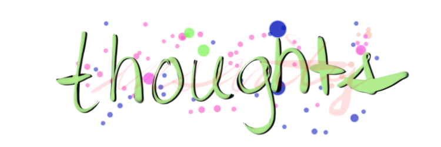

I Got Hit By A Car
Friday, May 8, 2026
A lot of American exceptionalism and classist theology teaches us to side with the oppressor and always question the victim or the oppressed. With that being said, no, I was not at fault. I was riding my bike in New York City, around the lower part of Manhattan with my partner and friend, and we had not only the right of way, but were as visible as we could be with the amount of lights we had. The driver not only was blocking both the crosswalk and side street, but he also broke several traffic laws by being a hazard for folks not in cars. He initially backed his car up, and I interpreted that as him not only seeing us but giving us space to go in front of him, and our friend Ibrahim did actually ride in front of him. Alas, when it was my turn to ride in front of his car, he immediately accelerated into me, and I was launched off my bike, into the New York City streets where my forehead and asphalt made contact with each other, causing me to be severely concussed, and the driver eventually drove away. Ergo, a hit and run. He initially got out of his car to make sure I wasn't dead and that he didn't commit murder, and when he noticed I was breathing, and my partner told him to pull aside so we could get his information, he instead drove off, because, well, god forbid you hold yourself accountable for nearly killing someone.
If you ask me, he committed attempted murder. There were no cameras at this intersection, it was busy as fuck, car drivers in every corner caught in evening congestion, blasting their horns, and even the guy whose car who I was launched into, my frame hitting his rear light, made time to get out not to check on me but to CHECK HIS CAR, also dipped because, well, god forbid we care more about people than property.
No, we didn't take any pictures of the assailant. We had some hope for humanity that he'd pull over and provide his information. No, the police have yet to find him. No, I don't think he'll ever be found. My glasses were broken on the fall, and I have a concussion. My entire body is in pain, I have bruises everywhere, and I'm honestly fortunate enough to not be dead or have broken bones. Even if I did die, American society has developed such a violent malice towards the impoverished and those who are unable to drive or afford to drive that the likely response from car drivers would be, "Well, it's your fault for being on the road on a bike". Never does the status quo question itself. Never does society reflect onto itself and the standards that we have been given. I am genuinely grateful I am not dead. If I was, that'd make the authority's response to my death far easier because I am ultimately silenced and can be spoken for not by myself but another who can easily twist the entire situation against my favor.
The bike is fine. My front wheel is destroyed, but it's fine. It was a new wheel---pink Velocity rim---and so were my glasses, of which I had just received just two weeks prior to the crash (I initially typed accident because we are propagandized to call these crashes 'accidents', and that language therefore takes away ANY accountability from the assailant/murderer). My mind is all over the place. It's hard for me to keep a single thought. I've been increasingly more forgetful. It's hard to maintain conversation. I honestly am afraid I've developed a traumatic brain injury of some sort. I hate being vulnerable and weakened outside of my own accord. But I'm alive. Gods, I'm alive. And it's angering. It's angering that a hit-and-run can just occur with little impunity, and I am forced to continue my life as if nothing had happened. America is such a reactive society. If I died, then there'd be some sort of response that night to hold the man accountable. But since I survived, nothing occurred. "Oh, she's breathing". I'm still injured, though. I'm still bleeding. I'm still in pain. I'm still broken, mentally, emotionally. How many more times does the system think we'll allow injustice to pursue? There is a breaking point amongst these things where even the individual reaches their limit and demands accountability. When all is lost, there is nothing to lose.
Even after all of this, I still loved New York City. It's such a beautiful place. I don't care how stimulating it is for others. I felt so invisible, in the best way. There's a human saturation amongst every street that I just blend in. Save the street. In the streets I am the most visible. I am seen yet feel the most empowered. I am god on the streets, on my bike. It's so liberating. I think the reason why car drivers hate us so much is because they hate the system that has put them there, but they don't realize it. They want something visible to hate, and it's impossible to hate someone inside of a car because you can't even see them. But you can see the cyclist. You see how happy they are, how visible their emotions become, how exciting it is to see them be excited. And envy develops, and so on, and so on.
I hope they find the man. I do. And, yes, I will be suing. The guy did a hit-and-run. The guy almost killed me. And, if I have the choice, I want to see him behind bars for a long time. We need to stop letting attempted homicides like this slide just because America has taught us to blame the victim amongst every circumstance. No longer.
Free Palestine. Liberation for the working class. Tax the rich. Fuck the oppressors.
Baltimore City Government Leadership is Disgraceful
Saturday, May 16, 2026
I was going to write a whole rant at seven in the morning, but I just can't. Our leadership pretends to care about us, but they instead take donor money from corporations and the wealthy to fill their pockets at the expense of the people. They act as though because they are Democrats and that they are "not Republicans", we must automatically be grateful they are, in fact, in leadership and should shut the fuck up. It's disgraceful. Brandon Scott, Zeke Cohen, Ryan Dorsey, Odette Ramos. They don't care about bettering our lives, just providing flowery words to shut us up for a few more days until we discover another lie they've been trying so hard to cover up like signing on for data centers by John Hopkins, a data center that costs more than $150 million and that the state government has provided to them $9 million for the creation in marginalized parts of Baltimore City. They don't care that our water is going to be polluted, our climate destroyed, our homes unlivable, all so that they can make millions in the process at the expense of our lives. I am seriously so fucking over this apathetic, Democratic leadership that becomes aggressive the moment we criticize them for their inaction.
Baltimore City has the highest budget for their police department, per capita, in the entire nation. Nearly $653 million to the Baltimore Police Department while healthcare and education barely meet a third of the former's budget. And you know who pretended to not know? Zeke Cohen. Probably the rest of them, too, if they responded. It's so fucking abhorrent and pathetic that these suits pretend to care about us, but they rely wholly on our arrogance, our illusionment. But we are being disillusioned. We are realizing how much of a lie the capitalist American construct is. This entire settler-colonial, apartheid creation is a fucking disgraceful lie. The "I want to recognize the land we are on" lazy fucks, the "vote blue no matter who" weasel bottoms, and so and so forth. "Vote Blue No Matter Who...unless they actually have policies like universal healthcare and anti-war sentiment and transportation alternatives that aren't just a fucking car" bull fuckers.
"AI is inevitable" they say, as they actively allow AI to enter our world from tech billionaires that artificially bring the artifical into existence and somehow equate it to a natural phenomenon. It is not inevitable, you loose rodent. You're the run bringing into our fucking society, Odette, Brandon, Zeke. You are all going to destroy our homes because you'd rather be a fucking lazy politician that refuses to encounter their own constituent outrage so that you can pretend to be a living deity and angel in society because suddenly being a "Democratic" saves you from doing absolutely anything. And these same people hate Zohran Mamdani not because of who he is but for what he presents. He's doing the thing that Democrats have always claimed they are doing: ACTION. Mayor Scott thinks doing a "90-day Spring Cleanup" is this amazing, newfound miracle, when having Baltimore City Government actively clean up the city and provide benefits for their constituents should be A FUCKING EVERYDAY JOB. HOLY SHIT. THE BARE FUCKING MINIMUM, AND WE'RE SUPPOSED TO CHEER HIM ON FOR IT? I'm so over the do-nothing-democrats! We need a socialist overtake, but this god-damn country has propagandized its entire population for so long because education isn't free for a reason that folks are more happy with a fascist dictator or a sterile, vegetative inactive corporate democrat than a socialist who literally just wants the people to live better lives.
Property over people, right? Save the rich, fuck the poor. Our police isn't ours, it is the wealthy's. The police protects their property, the police protects their assets, their lives, their existences. They don't care about us. Our leadership doesn't care about us. It's time we remind these suits, these slim, scarce majority of people, that we have power in numbers. All they have is their words and wallets. We have the mallots and fists and blades to cut down their ropes. Fuck them. Fuck the rich. Tax them, Brandon Scott. I know you won't. Because you are them.